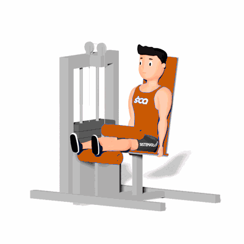

Banco Flexor em Isometria

Exercício isométrico que irá trabalhar o fortalecimento dos músculos posteriores da coxa, proporcionando o aumento da força máxima nessa área.
Ficha Técnica
Tipo: Musculação
Grupo Muscular: Perna
Aparelho: Nenhum
Músculos: Nenhum
Como realizar
- Sentar no aparelho, apoiando bem a coluna, os pés devem estar apoiados em cima da almofada, com esta na altura da linha dos tornozelos;
- Prestar atenção também ao travar a almofada que apoia na coxa, pois esta deve estar logo acima do joelho;
- Flexionar os joelhos até contrair ao máximo o músculo da posterior da coxa;
- Mantenha nessa posição pelo tempo determinado pelo professor(a);
- Retorne à posição inicial de forma controlada.
 RC STORE
RC STORE